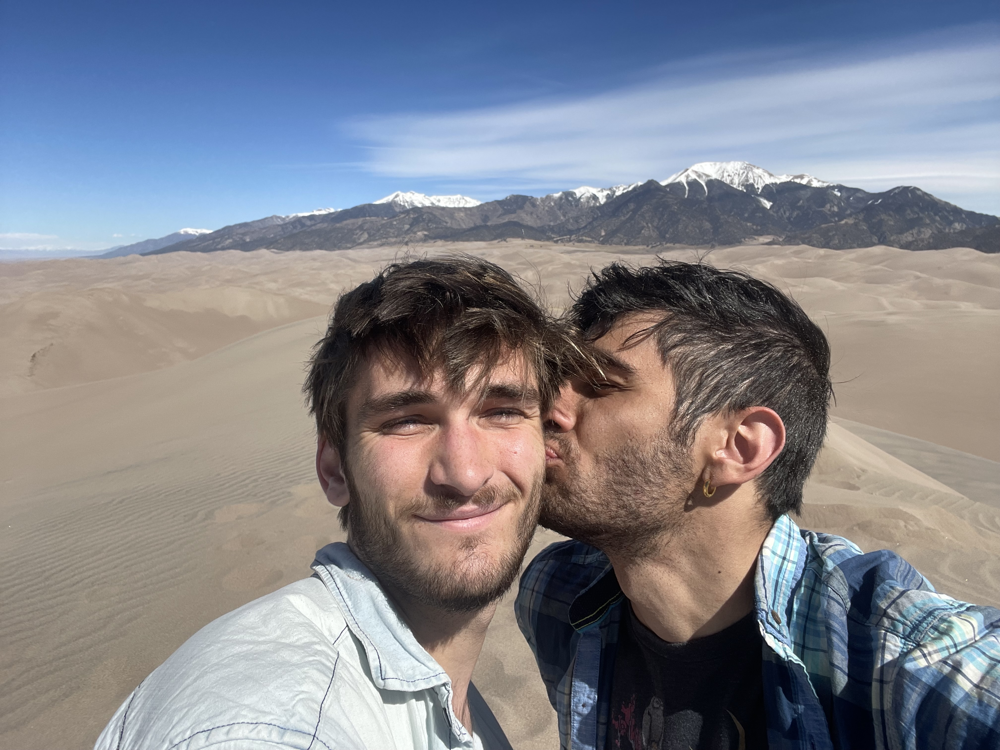

>< Hi there! ><
My name is Spencer Poole (duh), and I'm a Computer Science student at Colorado School of Mines. I also work part-time
at ndt4.0 as an Associate Engineer.

This is me (left) And my boyfriend Daniel (right) in the Great Sand Dunes of Southern Colorado! We live together in Golden, CO.
When I'm not working or doing Homework I love going snowboarding, hiking, or playing video games.
Fun Fact: I actually started college as a chemical engineer, but
computer science appealed to my need for creativity and excitement as well as my passion for constantly learning new things.
Technical Qualifications
I know 2 spoken Languages (English and German) and a few Programming Languages, in order of preference these are